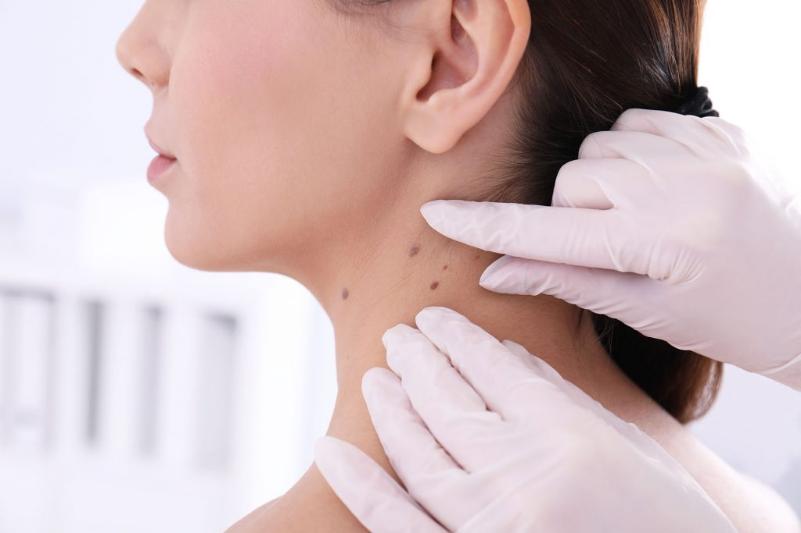

Skin cancer is one of the most prevalent cancers worldwide, affecting millions of people every year and its incidence continues to rise due to increased exposure to ultraviolet (UV) radiation from the sun and tanning devices. The disease occurs when skin cells experience DNA damage that causes uncontrolled growth, leading to the formation of malignant tumors. There are several types of skin cancer, each with its own characteristics and level of risk. Basal cell carcinoma (BCC) is the most common, often appearing as a small, shiny bump or a sore that does not heal and it usually grows slowly without spreading to other parts of the body. Squamous cell carcinoma (SCC) is less common but more aggressive, with the potential to spread to other tissues if left untreated. The most dangerous type, melanoma, is less frequent but highly malignant, as it can metastasize rapidly to internal organs.
Early detection plays a critical role in successful treatment, which is why public awareness of symptoms such as new or changing moles, unusual skin growths or persistent sores is vital. Preventive measures, including the use of sunscreen, protective clothing, avoiding excessive sun exposure and regular skin check-ups, can significantly reduce the risk of developing skin cancer. With increased education and proactive healthcare, individuals can identify warning signs earlier, seek timely medical intervention, and improve outcomes, ultimately reducing the impact of this serious but preventable disease.
Health authorities are sounding the alarm as skin cancer rates continue to climb globally, with melanoma cases rising by nearly 50% over the past decade in several developed nations. Dermatologists attribute this surge to increased UV exposure from both natural sunlight and tanning beds, combined with delayed screenings during the pandemic years. Dr. Sarah Mitchell, a leading oncologist at Memorial Hospital, emphasizes that early detection remains crucial.When caught in its earliest stages, skin cancer has a cure rate exceeding 99%, but many people ignore warning signs until it's too late. The medical community is now advocating for annual skin checks and promoting the rule looking for Asymmetry, Border irregularities, Color variations, Diameter larger than a pencil eraser and Evolving moles. Public health campaigns are also stressing simple preventive measures, wearing broad-spectrum sunscreen with SPF 30 or higher, seeking shade during peak sun hours and wearing protective clothing. With summer approaching, officials hope these reminders will encourage people to take skin protection seriously, potentially saving thousands of lives through early intervention and prevention.
As skin cancer rates continue to rise, health experts stress that prevention and early detection are more critical than ever. By adopting simple sun safety habits wearing sunscreen, seeking shade and scheduling regular skin checks individuals can significantly reduce their risk.